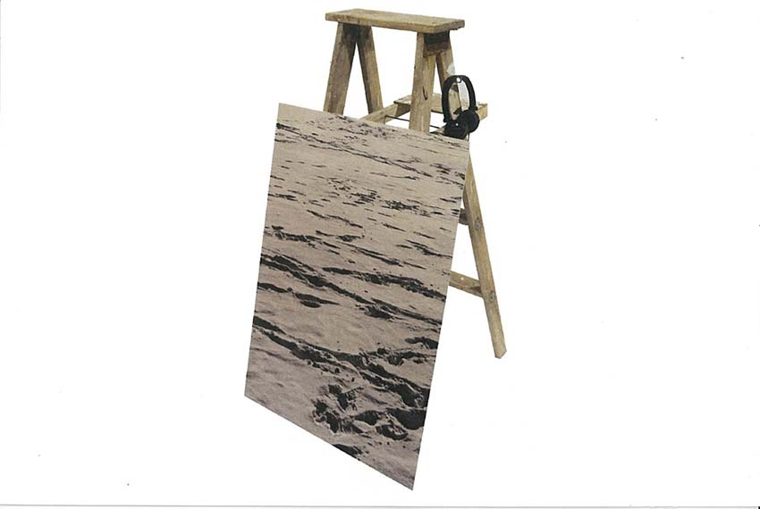

Jessica Arseneau
::: portfolio
Images and projects

Transitory
2014
Inkjet print, stool and headphones with sound
48" x 29.3" x 27"
The image is a transitional space. It is supported by a stool while blocking the stairs. In the headphones, you hear the sound that I have a recorded at the entrance of a public library when I was repeatedly turning the revolving door. A rhythm is created by the people who comes in and out in a continuous flux. Other sounds taken from other public spaces near by are orchestrated in this audio piece.
Photo credits: Mathieu Léger